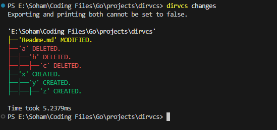

⬇️ Download dirvcs
Choose your OS to get started:
Download for Windows (.exe) Download for macOS Download for LinuxWhat is dirvcs?
dirvcs is a version control system for your directory structure. It doesn't track file content — instead, it snapshots your folder layout and highlights any structural changes like file moves, additions, or deletions.
Think of it as Git, but focused purely on how your folders evolve — perfect for tracking output builds, release assets, backups, and more.
Why use it?
- Detect unexpected folder changes across builds or deployments
- Compare two versions of a directory (e.g., prod vs dev, backup vs local)
- Automate structure audits in CI/CD pipelines
- Quickly visualize directory diffs — as text or JSON
- No Git setup, remote, or complex tracking — just drop and run
View what exactly changed
Quick Start
dirvcs init # Start tracking the current directory
dirvcs persist -m "Initial snapshot"
dirvcs changes
dirvcs changes --old abc123 --new def456 --export-verbose
Available Commands
init— Start tracking a directorypersist— Save a versioned snapshotchanges— Compare two snapshots or snapshot vs currentlogs— View snapshot historyshowtree— Show the full directory tree from a snapshotconfig— Update CLI settings (indent, export, etc.)
Configuration
Customize behavior using a YAML file at .dirvcs/config.yaml.
Here's an example:
indent: "|--"
prune_limit: 20
verbose: true
export: false